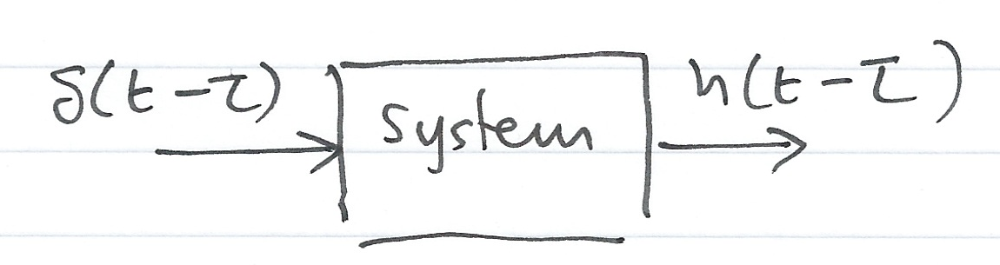
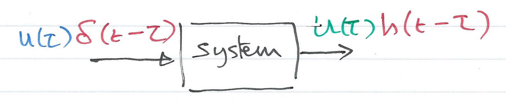
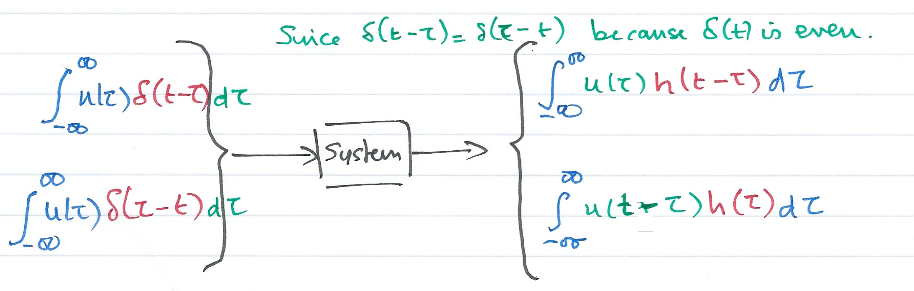
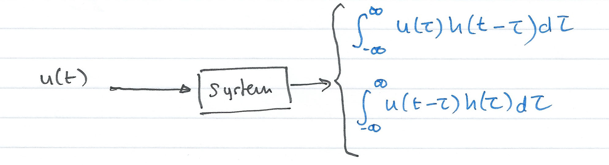

Worksheet 8¶
To accompany Chapter 3.5 Convolution and the Impulse Response¶
Colophon¶
This worksheet can be downloaded as a PDF file. We will step through this worksheet in class.
An annotatable copy of the notes for this presentation will be distributed before the second class meeting as Worksheet 7 in the Week 3: Classroom Activities section of the Canvas site. I will also distribute a copy to your personal Worksheets section of the OneNote Class Notebook so that you can add your own notes using OneNote.
You are expected to have at least watched the video presentation of Chapter 3.5 of the notes before coming to class. If you haven’t watch it afterwards!
After class, the lecture recording and the annotated version of the worksheets will be made available through Canvas.
Agenda¶
The material to be presented is:
First Hour¶
Even and Odd Functions of Time
Time Convolution
Even and Odd Functions of Time¶
Fill in the Blanks Quiz.
Even Functions of Time¶
A function \(f(t)\) is said to be an even function of time if the following relation holds
Polynomials with even exponents only, and with or without constants, are even functions. For example:
Write down the Taylor-series polynomial expansion of \(\cos t\). Is \(\cos t\) even or odd?
Odd/Even?
Odd Functions of Time¶
A function \(f(t)\) is said to be an odd function of time if the following relation holds
Polynomials with even exponents only, and with or without constants, are even functions.
Write down the Taylor-series polynomial expansion of \(\cos t\). Is \(\cos t\) even or odd?
Odd/Even?
Observations¶
For odd functions \(f(0) =\)
The product of two even or two odd functions is an [Even/Odd] function.
The product of an even and an odd function, is an [Even/Odd] function.
In the following \(f_e(t)\) will denote an even function and \(f_o(t)\) an odd function.
Time integrals of even and odd functions¶
For an even function \(f_e(t)\)
For an odd function \(f_o(t)\)
Even/Odd Representation of an Arbitrary Function¶
A function \(f(t)\) that is neither even nor odd can be represented as an even function by use of:
or as an odd function by use of:
Adding these together, an abitrary signal can be represented as
That is, any function of time can be expressed as the sum of an even and an odd function.
Example 1¶
Is the Dirac delta \(\delta(t)\) an even or an odd function of time?
Solution¶
Let \(f(t)\) be an arbitrary function of time that is continous at \(t=t_0\). Then by the sifting property of the delta function
and for \(t_0 = 0\)
Also for an even function \(f_e(t)\)
and for an odd function \(f_o(t)\)
Even or odd?¶
An odd function \(f_o(t)\) evaluated at \(t=0\) is zero, that is \(f_o(0) = 0\).
Hence
Hence the product \(f_o(t)\delta(t)\) is odd function of \(t\).
Since \(f_o(t)\) is odd, \(\delta(t)\) must be even because only an even function multiplied by an odd function can result in an odd function.
(Even times even or odd times odd produces an even function. See earlier slide)
Time Convolution¶
Consider a system whose input is the Dirac delta (\(\delta(t)\)), and its output is the impulse response \(h(t)\). We can represent the input-output relationship as a block diagram

In general¶
Add an arbitrary input¶
Let \(u(t)\) be any input whose value at \(t=\tau\) is \(u(\tau)\), Then because of the sampling property of the delta function
(output is \(u(\tau)h(t-\tau)\))
Integrate both sides¶
Integrating both sides over all values of \(\tau\) (\(-\infty < \tau < \infty\)) and making use of the fact that the delta function is even, i.e.
we have:
Use the sifting property of delta¶
The second integral on the left side reduces to \(u(t)\)
The Convolution Integral¶
The integral
or
is known as the convolution integral; it states that if we know the impulse response of a system, we can compute its time response to any input by using either of the integrals.
The convolution integral is usually written \(u(t)*h(t)\) or \(h(t)*u(t)\) where the asterisk (\(*\)) denotes convolution.
Second Hour¶
Graphical Evaluation of the Convolution Integral
System Response by Laplace
Graphical Evaluation of the Convolution Integral¶
The convolution integral is most conveniently evaluated by a graphical evaluation. The text book gives three examples (6.4-6.6) which we will demonstrate using a graphical visualization tool developed by Teja Muppirala of the Mathworks.
The tool: convolutiondemo.m (see license.txt).
clear all
cd ../matlab/convolution_demo
pwd
format compact
convolutiondemo % ignore warnings
Convolution by Graphical Method - Summary of Steps¶
For simplicity, we give the rules for \(u(t)\), but the procedure is the same if we reflect and slide \(h(t)\)
Substitute \(u(t)\) with \(u(\tau)\) – this is a simple change of variable. It doesn’t change the definition of \(u(t)\).
Reflect \(u(\tau)\) about the vertical axis to form \(u(-\tau)\)
Slide \(u(-\tau)\) to the right a distance \(t\) to obtain \(u(t-\tau)\)
Multiply the two signals to obtain the product \(u(t-\tau)h(\tau)\)
Integrate the product over all \(\tau\) from \(-\infty\) to \(\infty\).
Example 2¶
(This is example 6.4 in the Karris)
The signals \(h(t)\) and \(u(t)\) are shown below. Compute \(h(t)*u(t)\) using the graphical technique.

h(t)¶
The signal \(h(t)\) is the straight line \(f(t)=-t+1\) but this is defined only between \(t = 0\) and \(t = 1\). We thus need to gate the function by multiplying it by \(u_0(t)-u_0(t-1)\) as illustrated below:

Thus
u(t)¶
The input \(u(t)\) is the gating function:
so
Prepare for convolutiondemo¶
To prepare this problem for evaluation in the convolutiondemo tool, we need to determine the Laplace Transforms of \(h(t)\) and \(u(t)\).
convolutiondemo settings¶
Let
g = (1 - exp(-s))/sLet
h = (s + exp(-s) - 1)/s^2Set range \(-2 < \tau < -2\)
Summary of result¶
For \(t < 0\): \(u(t-\tau)h(\tau) = 0\)
For \(t = 0\): \(u(t-\tau) = u(-\tau)\) and \(u(-\tau)h(\tau) = 0\)
For \(0 < t \le 1\): \(h*u = \int_0^t (1)(-\tau + 1)d\tau = \left.\tau - \tau^2/2\right|_0^t = t-t^2/2\)
For \(1 < t \le 2\): \(h*u = \int_{t-1}^1(-\tau + 1)d\tau = \left.\tau - \tau^2/2\right|_{t-1}^{1} = t^2/2-2t+2\)
For \(2 \le t\): \(u(t-\tau)h(\tau) = 0\)
Answer 3¶
Example 4¶
This is example 6.6 from the text book.
Answer 4¶
System Response by Laplace¶
In the discussion of Laplace, we stated that
We can use this property to make the solution of convolution problems even simpler.
Impulse Response and Transfer Functions¶
Returning to the example we started with
Then the impulse response of the system \(h(t)\) will be given by:
Where \(H(s)\) be the laplace transform of the impulse response of the system \(h(t)\). From properties of the Laplace transform we know that
so that \(\Delta(s) = 1\) and
A consequence of this is that the transform of the impulse response \(h(t)\) of a system with transfer function \(H(s)\) is completely defined by the transfer function itself.
Previously we argued that the response of system with impulse response \(h(t)\) was given by the convolution integrals:
Thus the Laplace transform of any system subject to an input \(u(t)\) is simply
and
Using tables, solution of a convolution problem by Laplace is usually simpler than using convolution directly.
Example 5¶
This is example 6.7 from Karris.

For the circuit shown above, show that the transfer function of the circuit is:
Determine the impulse respone \(h(t)\) of the circuit and the response of the capacitor voltage when the input is the unit step function \(u_0(t)\) and \(v_c(0^-)=0\).
Assume \(C=1\; \mathrm{F}\) and \(R=1\;\Omega\).
Solution 5a - Impulse response¶
Solution 5b - Step response¶
Homework¶
Verify this result using the convolution integral